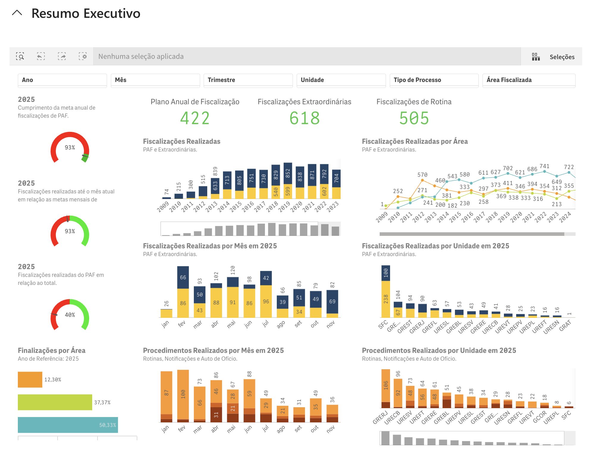

Business Intelligence para os gestores
PLANEJAMENTO
Ferramenta de Business Intelligence desde 2015
Criada para fornecer estatísticas sobre fiscalizações aos gestores da ANTAQ, abrangendo tempo, localização, infrações e indicadores de desempenho.
Evolução contínua
Aprimorada ao longo dos anos com melhorias solicitadas pelos próprios fiscais: indicadores de reincidência de infrações e pesquisa de processos sancionadores por razão social ou CNPJ.
Nova versão para todo o público interno
A versão atual está disponível para todos os servidores da ANTAQ por meio da Intranet SFC.
Caminho de acesso

Trilha Técnica da Fiscalização · SFC / GPF — ANTAQ
25 / 61